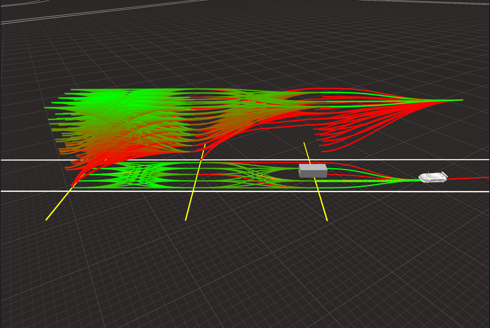
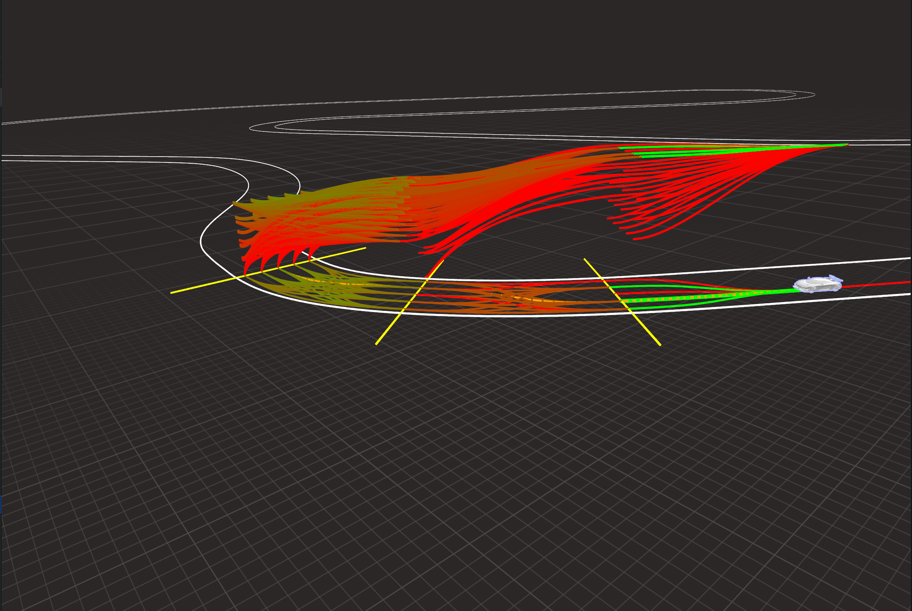
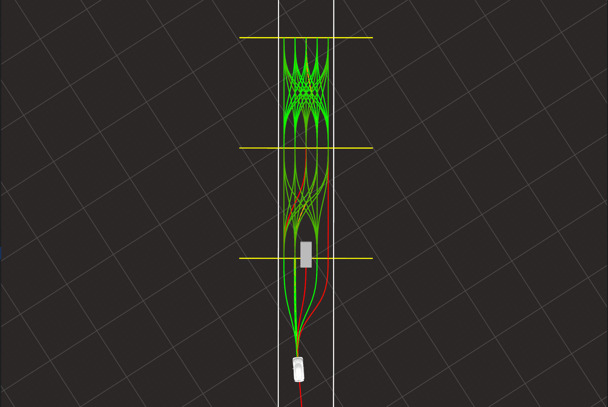

- BSc in Mechanical Engineering
- MSc in Mechatronics Engineering
- Optimal control
- MLT for Motorcycles
Optimal Control, Planning, and Intelligent Vehicles
Leveraging optimal control and sampling-based methods for motion planning in autonomous driving
13 November 2025
My Background
Personal experience and research activity


2013-2020


2020-2022
- Research Fellowship
- MLT for MotoGP Racing Team


2022-2025
- PhD in Mechatronics and Systems Engineering
- OCP, Planning and AD
- Industrial collaborations
- MISE and Horizon Europe projects


2025
- Visiting at TUM (Munich, Germany)
- MLT for IAC and A2RL.

now - future
- Finish my PhD
- Exploit my research for new applications
Sampling based planners for autonomous driving
MPTree - Semi-structured RRT* planner
MPTree
- RRT* based planner using motion primitives.
- Applications in autonomous racing and urban driving.
- SIL and VIL with industrial software and Stellantis.


Sampling based planners for autonomous driving
Monte Carlo Tree Search
 
 